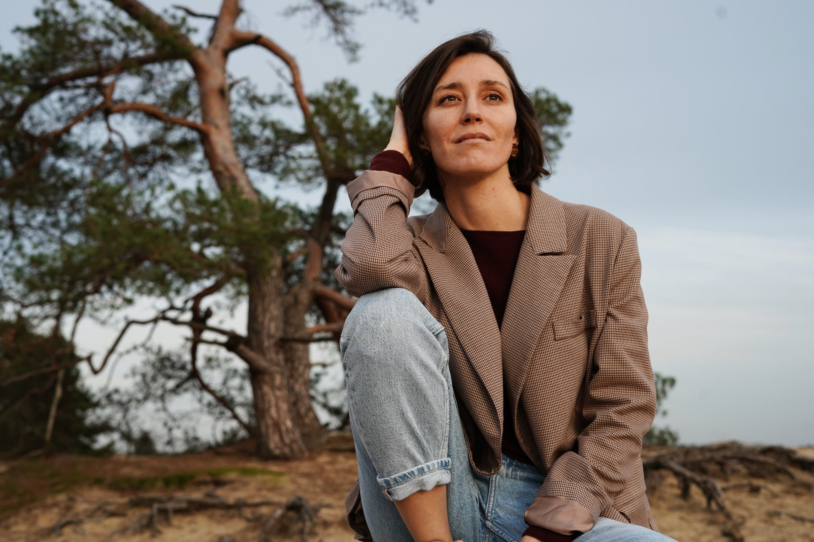

Masha Aftaeva, Founder
Founder
Masha Aftaeva is a garden designer and the founder of ORMA. Born and raised in Kemerovo, Russia, she discovered her passion for gardens during time spent in the United States, where she first encountered the idea of landscape as a form of intimate expression.
She studied forestry in Russia before training at the École Nationale Supérieure du Paysage (Versailles / Marseille) and the Academie van Boeckhout in Amsterdam. Her work has been shaped by experience in landscape agencies in Lyon and Rotterdam, before founding ORMA in the Netherlands.
Her signature: rare listening, uncompromising aesthetic rigor, and the conviction that every garden must tell something true about the person who inhabits it.
"Most designers ask what you want. I ask who you are."
Approach
Masha's method blends depth psychology with artistic curation. Each project begins with extended conversations — not just about preferences, but about rhythms, memories, aspirations. The garden emerges as a translation of this inner landscape into living form.
She lectures on garden design as a form of emotional architecture, and her work has been recognized for its ability to create spaces that feel both deeply personal and timelessly beautiful.
Experience
8+ years in private garden design
Agencies in Lyon & Rotterdam
Founded ORMA in the Netherlands
Education
École Nationale Supérieure du Paysage
(Versailles / Marseille)
Academie van Boeckhout, Amsterdam
Forestry studies, Russia
Background
Born in Kemerovo, Russia
Passion discovered in the United States
Now based in the Netherlands
Philosophy
Gardens as living art, depth psychology meets horticulture, emotional architecture, seasonal beauty
Interested in working with Masha?
Explore our approach →